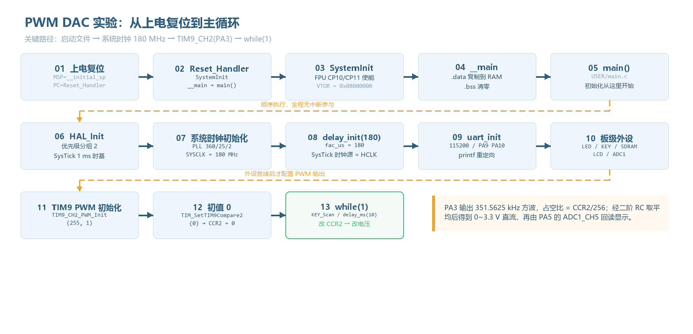
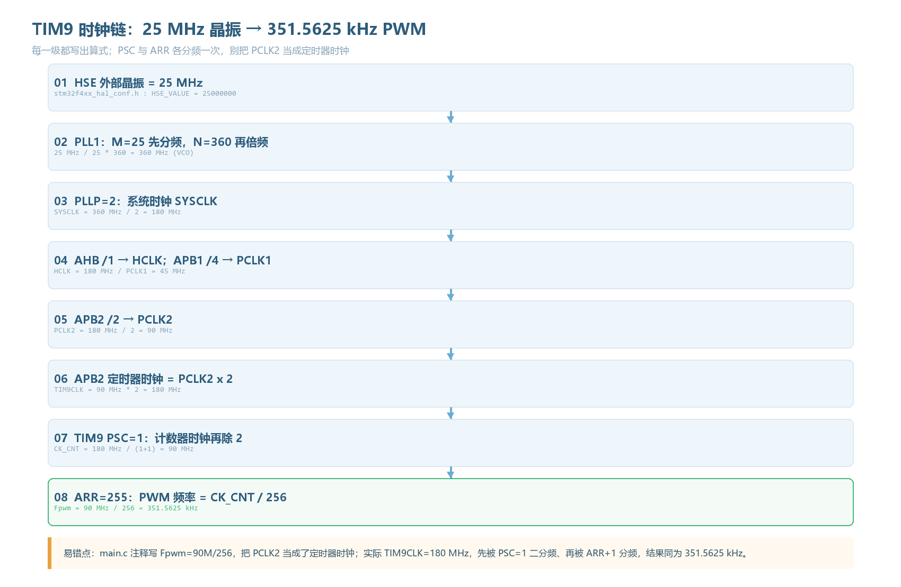
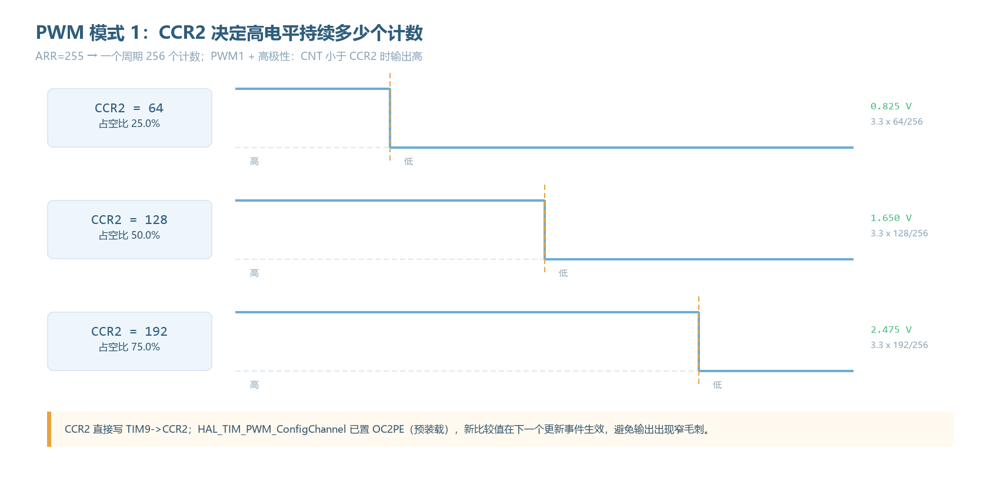
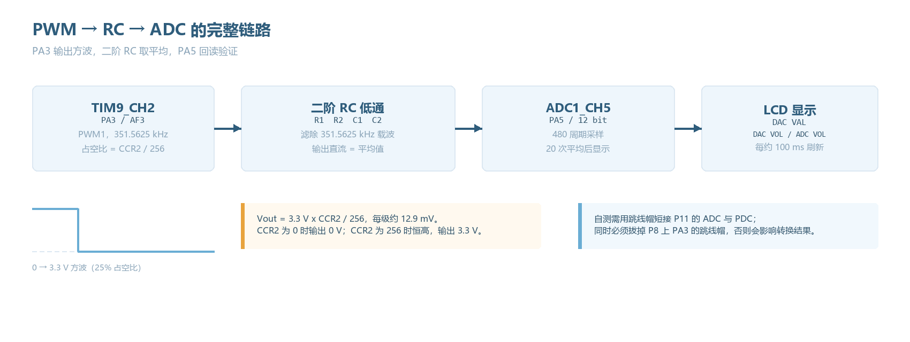
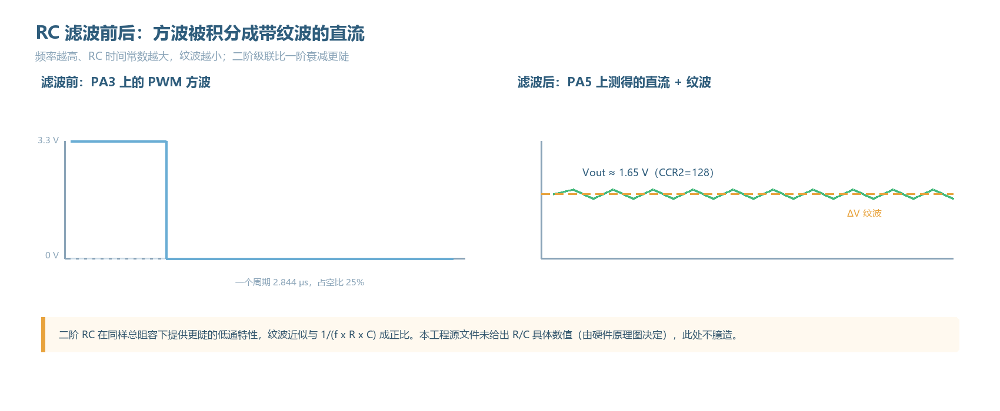
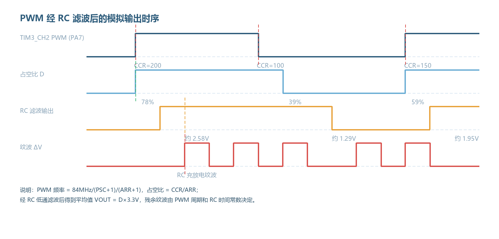

01 实验目标与硬件资源
本实验的目标是：用 TIM9 的通道 2 在 PA3 上输出固定频率、占空比可调的方波，经板上二阶 RC 低通滤掉载波、取出平均值，得到一路模拟电压；再用 ADC1 的通道 5 把这条电压读回来，与设定值一起显示在 LCD 上，形成“设定 → 输出 → 回读”的闭环演示。它和片内 DAC 实验的区别是：输出电压由 PWM 频率、占空比和 RC 参数共同决定，而不是写一个数据寄存器就结束。
| 资源 | 引脚 / 外设 | 关键配置 | 源码证据 |
|---|---|---|---|
| PWM 输出 | PA3 / TIM9_CH2 | AF3、复用推挽、上拉、高速 | HARDWARE/PWM_ADC/pwmdac.c · HAL_TIM_PWM_MspInit |
| PWM 载波 | TIM9（APB2） | PSC=1、ARR=255、PWM1、高极性 | pwmdac.c · TIM9_CH2_PWM_Init |
| RC 滤波 | 板载二阶 RC | 把方波积分成直流平均值 | readme.txt · 硬件资源第 5 条 |
| ADC 回读 | PA5 / ADC1_CH5 | 12 位、480 周期采样、20 次平均 | HARDWARE/ADC/adc.c · MY_ADC_Init / Get_Adc_Average |
| 按键 | WK_UP=PA0，KEY1=PH2 | WK_UP 加 10，KEY1 减 10 | HARDWARE/KEY/key.c · KEY_Scan |
| 显示 | LCD（FSMC + SDRAM） | DAC VAL / DAC VOL / ADC VOL | USER/main.c · LCD_ShowString / LCD_ShowxNum |
| 串口 | PA9 / PA10，115200 | printf 重定向，供 LCD_Init 与 USMART 使用 | SYSTEM/usart/usart.c · uart_init / fputc |
readme.txt 的“注意事项”里。02 目录与文件分工
工程沿用正点原子标准例程的分层：USER 放 main 与系统文件，CORE 放启动文件与 CMSIS，SYSTEM 放时钟/延时/串口，HARDWARE 放板级驱动，HALLIB 是 ST 的 HAL 库。本实验真正“新增”的只有 PWM_ADC/pwmdac.c，ADC 驱动来自上一个实验。
| 目录 / 文件 | 负责什么 | 本页看什么 |
|---|---|---|
CORE/startup_stm32f429xx.s | 栈堆、向量表、复位入口 | __initial_sp、Reset_Handler |
USER/system_stm32f4xx.c | FPU、RCC 复位、VTOR | SystemInit |
USER/main.c | 初始化顺序、按键换电压、LCD 刷新 | PWM_DAC_Set、main |
HARDWARE/PWM_ADC/pwmdac.c | TIM9 通道 2 的 PWM 初始化与比较值写入 | TIM9_CH2_PWM_Init、HAL_TIM_PWM_MspInit、TIM_SetTIM9Compare2 |
HARDWARE/ADC/adc.c | ADC1_CH5 初始化、单次与平均采样 | MY_ADC_Init、Get_Adc_Average |
SYSTEM/sys/sys.c | HSE + PLL 配置到 180 MHz | Stm32_Clock_Init |
SYSTEM/delay/delay.c | SysTick 轮询式 us/ms 延时 | delay_init、delay_us |
SYSTEM/usart/usart.c | USART1 与 printf 重定向 | uart_init、fputc |
HALLIB/.../stm32f4xx_hal_tim.c | HAL 定时器 PWM 通用实现（只读被调用函数） | HAL_TIM_PWM_Init、TIM_Base_SetConfig、TIM_OC2_SetConfig |
HARDWARE/LCD、SDRAM、KEY、LED | 显示与交互，本实验不修改 | 只确认调用顺序与现象 |
USMART/usmart.c | 串口命令行，可在线调用 PWM_DAC_Set | 本页只说明它能直接把电压设到 3.3 V |
HALLIB 只在“被本工程调用到”的地方展开，例如 HAL_TIM_PWM_Init 如何调用 MspInit、HAL_TIM_PWM_ConfigChannel 如何写 CCMR1/CCER，不去通读整个 HAL。03 启动流程总览

main 函数全文
int main(void) // 主函数入口，程序从这里开始执行 { u16 adcx; // ADC 采样原始值兼显示中间变量 float temp; // 电压换算用的浮点临时变量 u8 t=0; // 主循环计数器，到 10 触发一次 LCD 刷新 u16 pwmval=0; // PWM 比较值初值，上电先输出 0V u8 key; // 保存 KEY_Scan 返回的按键码 HAL_Init(); //初始化HAL库 Stm32_Clock_Init(360,25,2,8); //设置时钟,180Mhz delay_init(180); //初始化延时函数 uart_init(115200); //初始化USART usmart_dev.init(90); //初始化USMART LED_Init(); //初始化LED KEY_Init(); //初始化按键 SDRAM_Init(); //初始化SDRAM LCD_Init(); //初始化LCD MY_ADC_Init(); //初始化ADC1 TIM9_CH2_PWM_Init(255,1); //TIM9 PWM初始化, Fpwm=90M/256=351.562Khz. POINT_COLOR=RED; // 标题文字颜色设为红色 LCD_ShowString(30,50,200,16,16,"Apollo STM32F4/F7"); // 显示开发板型号 LCD_ShowString(30,70,200,16,16,"PWM DAC TEST"); // 显示实验标题 LCD_ShowString(30,90,200,16,16,"ATOM@ALIENTEK"); // 显示作者 LCD_ShowString(30,110,200,16,16,"2016/1/13"); // 显示日期 LCD_ShowString(30,130,200,16,16,"WK_UP:+ KEY1:-"); // 提示按键功能：加/减电压 POINT_COLOR=BLUE;//设置字体为蓝色 LCD_ShowString(30,150,200,16,16,"DAC VAL:"); // DAC 比较值标签 LCD_ShowString(30,170,200,16,16,"DAC VOL:0.000V"); // DAC 输出电压标签 LCD_ShowString(30,190,200,16,16,"ADC VOL:0.000V"); // ADC 回读电压标签 TIM_SetTIM9Compare2(pwmval); //初始值为0 while(1) // 主死循环 { t++; // 每轮循环计数加 1 key=KEY_Scan(0); // 扫描按键，mode=0 不支持连按 if(key==WKUP_PRES) // WK_UP 按下：增加输出电压 { if(pwmval<250)pwmval+=10; // 上限 250，每次加 10 个计数 TIM_SetTIM9Compare2(pwmval); //输出 }else if(key==KEY1_PRES) // KEY1 按下：降低输出电压 { if(pwmval>10)pwmval-=10; // 大于 10 才减 10 else pwmval=0; // 否则钳位到 0，防止 u16 回绕成 65535 TIM_SetTIM9Compare2(pwmval); //输出 } if(t==10||key==KEY1_PRES||key==WKUP_PRES) //WKUP/KEY1按下了,或者定时时间到了 { adcx=HAL_TIM_ReadCapturedValue(&TIM9_Handler,TIM_CHANNEL_2); // 读回 CCR2 作为 DAC VAL 显示 LCD_ShowxNum(94,150,adcx,3,16,0); //显示DAC寄存器值 temp=(float)adcx*(3.3/256);; //得到DAC电压值 adcx=temp; // 取电压整数部分（隐式截断） LCD_ShowxNum(94,170,temp,1,16,0); //显示电压值整数部分 temp-=adcx; // 减去整数部分，留下小数 temp*=1000; // 小数放大 1000 倍，显示三位小数 LCD_ShowxNum(110,170,temp,3,16,0x80); //显示电压值的小数部分 adcx=Get_Adc_Average(ADC_CHANNEL_5,20); //得到ADC转换值 temp=(float)adcx*(3.3/4096); //得到ADC电压值 adcx=temp; // 取整数部分 LCD_ShowxNum(94,190,temp,1,16,0); //显示电压值整数部分 temp-=adcx; // 取小数部分 temp*=1000; // 放大 1000 倍 LCD_ShowxNum(110,190,temp,3,16,0x80); //显示电压值的小数部分 t=0; // 刷新后计数器清零 LED0=!LED0; // 翻转 DS0 指示灯，表明系统在跑 } delay_ms(10); // 每轮延时 10ms，控制主循环节拍 } }
HAL_Init()先建立 1 ms 时基与优先级分组，后面delay_ms、HAL_ADC_PollForConversion的超时才有意义。Stm32_Clock_Init(360,25,2,8)把 HSI 切到 HSE+PLL 的 180 MHz；delay_init(180)的实参必须与之一致，否则fac_us算错，延时整体偏快或偏慢。uart_init(115200)必须在LCD_Init()之前：LCD 驱动内部用printf调试输出，而fputc直接写USART1->DR，串口没初始化就会卡在等待发送标志。TIM9_CH2_PWM_Init(255,1)放在最后，是因为它只依赖系统时钟与 GPIOA，和 LCD/ADC 没有先后要求；紧随其后的TIM_SetTIM9Compare2(0)保证上电先输出 0 V，而不是初始化时默认的 127。- 整个启动过程中没有任何定时器中断、DMA 或 EXTI，PWM 完全由硬件自己跑，CPU 只负责改
CCR2。
04 启动文件与向量表
CORE/startup_stm32f429xx.s 是 MDK 版启动文件。它先定义栈（0x400 = 1 KB）与堆（0x200 = 512 B），再把 __initial_sp 放在 __Vectors 的第一个字，第二个字放 Reset_Handler。复位时 Cortex-M4 硬件自动把这两个值装入 MSP 和 PC，所以不需要任何 C 代码参与。
Stack_Size EQU 0x400 ; 栈大小 0x400 = 1024 字节 AREA STACK, NOINIT, READWRITE, ALIGN=3 ; 定义栈段，未初始化、可读写、8 字节对齐 Stack_Mem SPACE Stack_Size ; 分配栈空间 __initial_sp ; 栈顶标号，向量表第 0 项指向它 Heap_Size EQU 0x200 ; 堆大小 0x200 = 512 字节 AREA HEAP, NOINIT, READWRITE, ALIGN=3 ; 定义堆段 __heap_base ; 堆起始地址 Heap_Mem SPACE Heap_Size ; 分配堆空间 __heap_limit ; 堆结束地址 AREA RESET, DATA, READONLY ; 定义复位向量段，只读 EXPORT __Vectors ; 导出向量表符号供链接器使用 __Vectors DCD __initial_sp ; Top of Stack，复位后装入 MSP DCD Reset_Handler ; Reset Handler，复位后装入 PC DCD NMI_Handler ; NMI Handler DCD HardFault_Handler ; Hard Fault Handler ; ……其余异常与中断向量省略，共 100 余项 Reset_Handler PROC ; 复位处理函数定义开始 EXPORT Reset_Handler [WEAK] ; 弱导出，允许 C 文件重写 IMPORT SystemInit ; 引用 C 函数 SystemInit IMPORT __main ; 引用 C 库入口 __main LDR R0, =SystemInit ; 把 SystemInit 地址装入 R0 BLX R0 ; 先做 FPU / RCC / VTOR 的最小初始化 LDR R0, =__main ; 把 __main 地址装入 R0 BX R0 ; 交给 C 库：复制 .data、清零 .bss，再调 main ENDP ; 函数结束
- 向量表第 0 项是
__initial_sp，不是函数指针；所以“复位后 MSP 从哪来”这个问题，答案在启动文件的Stack_Mem + Stack_Size。 Reset_Handler本身带[WEAK]，但工程里没有任何 C 文件重定义它，所以执行的就是这段汇编：SystemInit→__main。SysTick_Handler在启动文件里是弱定义的死循环，USER/stm32f4xx_it.c里的同名函数会覆盖它，内容只有一句HAL_IncTick()，这就是 HAL 的 1 ms 计数来源。SystemInit末尾写SCB->VTOR = FLASH_BASE | VECT_TAB_OFFSET；工程未定义VECT_TAB_SRAM，也未改VECT_TAB_OFFSET，所以向量表固定在0x08000000，没有 Bootloader 偏移。- 栈只有 1 KB：
main里出现float/double运算与 LCD 函数调用时要留意，深递归或大局部数组都可能直接踩栈。
05 SystemInit 与 HAL_Init
SystemInit：FPU、RCC 复位、向量表
void SystemInit(void) // 系统复位后最小初始化入口 { /* FPU settings ------------------------------------------------------------*/ #if (__FPU_PRESENT == 1) && (__FPU_USED == 1) // 仅当存在且使用 FPU 时才开启 SCB->CPACR |= ((3UL << 10*2)|(3UL << 11*2)); /* CP10/CP11 全访问，允许浮点指令 */ #endif // 结束 FPU 条件编译 /* Reset the RCC clock configuration to the default reset state ------------*/ RCC->CR |= (uint32_t)0x00000001; /* 打开 HSION，先回到内部 16 MHz */ RCC->CFGR = 0x00000000; /* 清空分频与时钟源选择 */ RCC->CR &= (uint32_t)0xFEF6FFFF; /* 关 HSEON、CSSON、PLLON */ RCC->PLLCFGR = 0x24003010; /* PLLCFGR 复位值 */ RCC->CR &= (uint32_t)0xFFFBFFFF; /* 清 HSEBYP */ RCC->CIR = 0x00000000; /* 关闭所有 RCC 中断 */ /* Configure the Vector Table location add offset address ------------------*/ SCB->VTOR = FLASH_BASE | VECT_TAB_OFFSET; /* 内部 Flash 起始地址 */ }
SCB->CPACR把 CP10/CP11 设为全访问，允许 Cortex-M4 执行浮点指令；不开启的话float运算会触发 Usage Fault。RCC->CR |= HSION先打开内部 16 MHz HSI；后续步骤关掉 HSE/PLL，保证在配置 PLL 期间内核有稳定时钟。RCC->CFGR = 0把系统时钟切回 HSI、所有分频器复位；这是“先退回安全态再改配置”的标准写法。SCB->VTOR = FLASH_BASE | VECT_TAB_OFFSET把向量表重定位到 Flash 起始；本工程VECT_TAB_OFFSET=0，所以表仍在 0x08000000。- 整个 SystemInit 不会把时钟升到 180 MHz；真正升频在 main 里的
Stm32_Clock_Init，所以此时 SysTick 重装值仍是按 16 MHz 算的。
HAL_Init：Cache、优先级分组、SysTick
HAL_StatusTypeDef HAL_Init(void) // HAL 库初始化入口 { __HAL_FLASH_INSTRUCTION_CACHE_ENABLE(); //开指令 Cache __HAL_FLASH_DATA_CACHE_ENABLE(); //开数据 Cache __HAL_FLASH_PREFETCH_BUFFER_ENABLE(); //开预取 HAL_NVIC_SetPriorityGrouping(NVIC_PRIORITYGROUP_2);//中断优先级分组2 HAL_InitTick(TICK_INT_PRIORITY); //用 SysTick 建立 1 ms 时基 HAL_MspInit(); //板级 MSP，本工程为空实现 return HAL_OK; // 返回初始化成功 } __weak HAL_StatusTypeDef HAL_InitTick(uint32_t TickPriority) // 用 SysTick 建立 1ms 时基（弱定义，可被覆盖） { HAL_SYSTICK_Config(HAL_RCC_GetHCLKFreq()/1000); //重装值 = HCLK / 1000 HAL_NVIC_SetPriority(SysTick_IRQn, TickPriority ,0); // 设置 SysTick 中断优先级 return HAL_OK; // 返回成功 }
HAL_Init()执行时，SystemInit刚把时钟退回 HSI 16 MHz，所以第一次HAL_InitTick写入的重装值是16000000/1000 = 16000。- 紧接着
Stm32_Clock_Init调用HAL_RCC_ClockConfig，该函数末尾会再调用一次HAL_InitTick(TICK_INT_PRIORITY)；此时 HCLK 已是 180 MHz，重装值变成180000，HAL 的uwTick才真正是 1 ms 一格。 - 如果只调
HAL_Init而不切时钟，SysTick 会按 16 MHz 计数；反过来只切时钟不重配 SysTick，1 ms 就会变成约 0.089 ms。这是“改了时钟但延时不对”的常见根因。 NVIC_PRIORITYGROUP_2表示 2 位抢占优先级 + 2 位子优先级；后面 USART1 的(3,3)就是在这个分组下解释的。HAL_MspInit在工程里是__weak空函数，本实验没有重写，所以 HAL_Init 阶段不会碰任何 GPIO。
06 时钟、延时与串口
时钟树计算
| 节点 | 结果 | 算式 / 源码 |
|---|---|---|
| HSE | 25 MHz | stm32f4xx_hal_conf.h：HSE_VALUE 25000000 |
| VCO | 360 MHz | 25 MHz ÷ M(25) × N(360) |
| SYSCLK | 180 MHz | 360 MHz ÷ P(2) |
| HCLK | 180 MHz | AHB 分频 RCC_SYSCLK_DIV1 |
| PCLK1 | 45 MHz | 180 MHz ÷ 4（RCC_HCLK_DIV4） |
| PCLK2 | 90 MHz | 180 MHz ÷ 2（RCC_HCLK_DIV2） |
| TIM9CLK | 180 MHz | APB2 预分频 ≠ 1 时，定时器时钟 = PCLK2 × 2 |
| Flash 等待 | 5 WS | HAL_RCC_ClockConfig(..., FLASH_LATENCY_5) |
| Over-Drive | 已开启 | HAL_PWREx_EnableOverDrive()，180 MHz 必需 |
delay_init 与 delay_us
void delay_init(u8 SYSCLK) // 延时初始化，SYSCLK 为系统主频 MHz { HAL_SYSTICK_CLKSourceConfig(SYSTICK_CLKSOURCE_HCLK);//SysTick频率为HCLK fac_us=SYSCLK; //180 MHz 下 fac_us=180，即 1 us = 180 个节拍 } void delay_us(u32 nus) // us 级延时（轮询 SysTick） { u32 ticks; // 需要等待的节拍总数 u32 told,tnow,tcnt=0; // told 旧值/tnow 新值/tcnt 已累计节拍 u32 reload=SysTick->LOAD; //当前重装值 179999 ticks=nus*fac_us; //需要的节拍数 told=SysTick->VAL; //刚进入时的递减计数器值 while(1) // 循环轮询直到达到目标节拍 { tnow=SysTick->VAL; // 读取当前递减计数器值 if(tnow!=told) // 只有计数变化才累加 { if(tnow<told)tcnt+=told-tnow; //未跨过重装点 else tcnt+=reload-tnow+told; //已回绕，补上 reload 差值 told=tnow; // 更新旧值为当前值 if(tcnt>=ticks)break; // 累计达到目标则退出 } }; }
delay_init(180)只设 SysTick 时钟源为 HCLK、记录fac_us=180；1ms 重装值LOAD=179999是HAL_InitTick写的，与delay_init无关。delay_us直接读SysTick->VAL做差累加，属于轮询；即使 SysTick 中断被关闭，只要计数器在跑，延时依然准确。- 24 位递减计数器在 180 MHz 下约 93ms 回绕一次，所以必须区分
tnow < told（未跨重装点）和tnow >= told（已回绕）两种情况，reload-tnow+told正是补回绕的一段。 delay_ms在裸机分支里就是for(i=0;i<nms;i++) delay_us(1000)，所以主循环每轮 10ms 的节拍由它决定。- 如果
Stm32_Clock_Init改了主频但忘记重新delay_init，fac_us就不对，所有延时会同比偏快或偏慢。
uart_init 与 printf 重定向
UART1_Handler.Instance=USART1; //USART1 UART1_Handler.Init.BaudRate=bound; //波特率 115200 UART1_Handler.Init.WordLength=UART_WORDLENGTH_8B; //8 位数据 UART1_Handler.Init.StopBits=UART_STOPBITS_1; //1 个停止位 UART1_Handler.Init.Parity=UART_PARITY_NONE; //无校验 UART1_Handler.Init.HwFlowCtl=UART_HWCONTROL_NONE; //无硬件流控 UART1_Handler.Init.Mode=UART_MODE_TX_RX; //收发模式 HAL_UART_Init(&UART1_Handler); //内部会调用 HAL_UART_MspInit 配置 PA9/PA10 int fputc(int ch, FILE *f) // printf 重定向到 USART1 { while((USART1->SR&0X40)==0);//循环发送,直到发送完毕（TXE=1） USART1->DR = (u8) ch; // 把字符写入发送数据寄存器 return ch; // 返回原字符，符合 fputc 约定 }
delay_init(180)只做两件事：把 SysTick 时钟源设为 HCLK、把fac_us设为 180。真正产生 1 ms 节拍的是HAL_InitTick配置的LOAD=179999。delay_us直接读SysTick->VAL做差，属于轮询；即使 SysTick 中断被关掉，只要计数器在跑，延时依然成立。- 24 位递减计数器在 180 MHz 下约 93 ms 回绕一次，所以代码里必须区分“
tnow < told”和“已回绕”两种情况，否则跨过重装点的延时会算成负数。reload-tnow+told正是补这一段。 delay_ms在非 OS 分支里就是for(i=0;i<nms;i++) delay_us(1000)，所以主循环每轮 10 ms 的节拍由它决定。printf能用的前提是fputc被重定向到 USART1；readme.txt特别提示LCD_Init内部用了printf，因此必须先uart_init。
07 定时器时钟与 PWM 频率

TIM9_CH2_PWM_Init
void TIM9_CH2_PWM_Init(u16 arr,u16 psc) // TIM9 通道2 PWM 初始化，arr=重装值 psc=预分频 { TIM9_Handler.Instance=TIM9; //定时器9 TIM9_Handler.Init.Prescaler=psc; //定时器分频，本实验 psc=1 TIM9_Handler.Init.CounterMode=TIM_COUNTERMODE_UP;//向上计数模式 TIM9_Handler.Init.Period=arr; //自动重装载值，本实验 arr=255 TIM9_Handler.Init.ClockDivision=TIM_CLOCKDIVISION_DIV1; // 采样时钟不分频 HAL_TIM_PWM_Init(&TIM9_Handler); //内部调用 HAL_TIM_PWM_MspInit 开时钟、配 PA3 TIM9_CH2Handler.OCMode=TIM_OCMODE_PWM1; //模式选择PWM1 TIM9_CH2Handler.Pulse=arr/2; //默认比较值 127，占空比约 49.6% TIM9_CH2Handler.OCPolarity=TIM_OCPOLARITY_HIGH; //输出比较极性为高 HAL_TIM_PWM_ConfigChannel(&TIM9_Handler,&TIM9_CH2Handler,TIM_CHANNEL_2);//配置通道2 HAL_TIM_PWM_Start(&TIM9_Handler,TIM_CHANNEL_2);//开启PWM通道2 } void HAL_TIM_PWM_MspInit(TIM_HandleTypeDef *htim) // 定时器底层初始化：开时钟、配引脚 { GPIO_InitTypeDef GPIO_Initure; // GPIO 配置结构体 __HAL_RCC_TIM9_CLK_ENABLE(); //使能定时器9 __HAL_RCC_GPIOA_CLK_ENABLE(); //开启GPIOA时钟 GPIO_Initure.Pin=GPIO_PIN_3; //PA3 GPIO_Initure.Mode=GPIO_MODE_AF_PP; //复用推挽输出 GPIO_Initure.Pull=GPIO_PULLUP; //上拉 GPIO_Initure.Speed=GPIO_SPEED_HIGH; //高速 GPIO_Initure.Alternate= GPIO_AF3_TIM9; //PA3 复用为 TIM9_CH2 HAL_GPIO_Init(GPIOA,&GPIO_Initure); // 应用 PA3 的复用配置 }
| 参数 | 取值 | 算式 / 结果 |
|---|---|---|
| TIM9CLK | 180 MHz | PCLK2 90 MHz × 2 |
| PSC | 1 | 计数器时钟 = 180 ÷ (1+1) = 90 MHz |
| ARR | 255 | 一个周期 256 个计数 |
| PWM 频率 | 351.5625 kHz | 90 MHz ÷ 256 = 351562.5 Hz |
| PWM 周期 | 2.844 μs | 1 ÷ 351562.5 |
| 1 个计数 | 11.11 ns | 1 ÷ 90 MHz |
Fpwm=90M/256=351.562Khz，把 PCLK2（90 MHz）直接当成了定时器时钟。实际 TIM9 挂在 APB2，预分频不为 1 时定时器时钟是 PCLK2 × 2 = 180 MHz，再被 PSC=1 二分频回 90 MHz。两条路径数值相同纯属巧合，换成 psc=0 就会露馅：按注释算仍是 351.5625 kHz，实际却变成 703.125 kHz。__HAL_RCC_TIM9_CLK_ENABLE()与__HAL_RCC_GPIOA_CLK_ENABLE()缺一不可：时钟没开时写PSC/ARR不会生效，PA3 也不会有复用功能。GPIO_Initure.Alternate = GPIO_AF3_TIM9必须与数据手册的复用表对应；AF 号写错时引脚仍是普通 GPIO，示波器上只有固定电平。HAL_TIM_PWM_Init最终调用TIM_Base_SetConfig，把PSC/ARR写入后立即置EGR=UG，产生一次更新事件把预分频器与重装值真正装载；少了这一步，第一个周期的分频可能是旧的。HAL_TIM_PWM_Start做两件事：TIM_CCxChannelCmd(..., ENABLE)置CC2E，再__HAL_TIM_ENABLE置CR1.CEN。TIM9 是通用定时器，不需要MOE（只有 TIM1/TIM8 才需要）。- 初始化时
Pulse=arr/2=127，所以TIM9_CH2_PWM_Init返回瞬间 PA3 已经有一半占空比的波形；main紧接着写CCR2=0，才有“上电 0 V”的现象。
08 PWM 模式与占空比寄存器

HAL_TIM_PWM_ConfigChannel 的通道 2 分支
case TIM_CHANNEL_2: // 通道 2 配置分支 { assert_param(IS_TIM_CC2_INSTANCE(htim->Instance)); // 断言该定时器支持通道 2 /* Configure the Channel 2 in PWM mode */ TIM_OC2_SetConfig(htim->Instance, sConfig); // 调用底层函数写 CCMR1/CCER/CCR2 /* Set the Preload enable bit for channel2 */ htim->Instance->CCMR1 |= TIM_CCMR1_OC2PE; //CCR2 预装载使能 /* Configure the Output Fast mode */ htim->Instance->CCMR1 &= ~TIM_CCMR1_OC2FE; //关闭快速输出 htim->Instance->CCMR1 |= sConfig->OCFastMode << 8; // 写入通道 2 快速输出模式位 } break; // 结束通道 2 case
case TIM_CHANNEL_2分支调用TIM_OC2_SetConfig把 PWM 模式、极性、初始比较值写入CCMR1/CCER/CCR2，但此时CC2E仍为 0。CCMR1 |= TIM_CCMR1_OC2PE开启 CCR2 预装载：CPU 写 CCR2 后值先存影子寄存器，等下一次更新事件才生效，避免周期中间改值产生窄脉冲。CCMR1 &= ~TIM_CCMR1_OC2FE关闭快速输出；快速输出只在输出比较模式（非 PWM）下有意义，PWM 模式下必须关闭。- 整个
ConfigChannel不会置CCER.CC2E，也不会置CR1.CEN；所以只调 Init+ConfigChannel 不调 Start，PA3 上仍然没有波形。 - 通道 2 的配置位都在
CCMR1的高 8 位和CCER的 bit4~7，与通道 1 互不干扰。
TIM_OC2_SetConfig：真正写寄存器的位置
void TIM_OC2_SetConfig(TIM_TypeDef *TIMx, TIM_OC_InitTypeDef *OC_Config) // 配置通道 2 输出比较模式的底层函数 { uint32_t tmpccmrx = 0; // 暂存 CCMR1 uint32_t tmpccer = 0; // 暂存 CCER uint32_t tmpcr2 = 0; // 暂存 CR2 /* Disable the Channel 2: Reset the CC2E Bit */ TIMx->CCER &= ~TIM_CCER_CC2E; //先关通道，避免配置过程中输出毛刺 tmpccer = TIMx->CCER; // 读出 CCER 当前值 tmpcr2 = TIMx->CR2; // 读出 CR2 当前值 tmpccmrx = TIMx->CCMR1; // 读出 CCMR1 当前值 /* Reset the Output Compare mode and Capture/Compare selection Bits */ tmpccmrx &= ~TIM_CCMR1_OC2M; //清 OC2M[2:0] tmpccmrx &= ~TIM_CCMR1_CC2S; //CC2S=00，通道配置为输出 /* Select the Output Compare Mode */ tmpccmrx |= (OC_Config->OCMode << 8); //PWM1 = 110，写入 OC2M /* Reset the Output Polarity level */ tmpccer &= ~TIM_CCER_CC2P; //CC2P=0，高电平有效 tmpccer |= (OC_Config->OCPolarity << 4); // 写入通道 2 输出极性 TIMx->CR2 = tmpcr2; // 写回 CR2 TIMx->CCMR1 = tmpccmrx; // 写回 CCMR1（模式、预装载等） /* Set the Capture Compare Register value */ TIMx->CCR2 = OC_Config->Pulse; //初始比较值 127 TIMx->CCER = tmpccer; //此时 CC2E 仍为 0，等 Start 才置位 }
| 寄存器 / 位 | 本实验取值 | 含义 |
|---|---|---|
CCMR1.OC2M[2:0] | 110 | PWM 模式 1：CNT < CCR2 时有效电平 |
CCMR1.CC2S[1:0] | 00 | 通道 2 配置为输出 |
CCMR1.OC2PE | 1 | CCR2 预装载，写值在更新事件后生效 |
CCER.CC2P | 0 | 高极性，有效电平为高 |
CCER.CC2E | Start 时置 1 | 通道输出使能 |
CCR2 | 0 ~ 256 | 高电平持续的计数个数 |
OC2PE=1表示CCR2是预装载寄存器，CPU 写入的值先进入影子寄存器，直到下一次UG或计数器溢出（更新事件）才搬到工作寄存器。- 这样做的目的是防止在周期中间改比较值产生窄脉冲；代价是
TIM_SetTIM9Compare2写入后，最多要等一个 PWM 周期（2.844 μs）才看到变化——对人眼和 ADC 来说完全可以忽略。 - PWM1 模式下，
CNT < CCR2输出有效电平（高），CNT ≥ CCR2输出无效电平（低）。所以CCR2=0时整周期为低，CCR2=256（大于 ARR=255）时整周期为高。 - ARR 本身没有开预装载（
CR1.ARPE=0），TIM_Base_SetConfig写完ARR再置UG，所以频率参数是立即生效的。 - 若把极性改成
TIM_OCPOLARITY_LOW，同样的CCR2会得到“低电平占 CCR2 个计数”的波形，RC 后的电压会反过来，这是排查“电压越调越小”的第一检查点。
09 分辨率与比较值换算
//设置输出电压 //vol:0~330,代表0~3.3V void PWM_DAC_Set(u16 vol) // 设置 PWM DAC 输出电压，vol 单位 0.01V（0~330） { double temp=vol; // 转 double，避免整数除法截断 temp/=100; // 毫伏转伏：165 → 1.65V temp=temp*256/3.3; // 伏转 CCR2：电压 × (256/3.3) TIM_SetTIM9Compare2(temp); //double 隐式转换为 u32，小数被截断 } //设置TIM通道2的占空比 //compare:比较值 void TIM_SetTIM9Compare2(u32 compare) // 直接写 CCR2 改变占空比 { TIM9->CCR2=compare; // 写入比较寄存器（有预装载，下个周期生效） }
| vol | temp = vol/100 | temp × 256 / 3.3 | CCR2 | 占空比 | 理论输出 |
|---|---|---|---|---|---|
| 0 | 0.00 V | 0.00 | 0 | 0.00% | 0.0000 V |
| 100 | 1.00 V | 77.58 | 77 | 30.08% | 0.9926 V |
| 165 | 1.65 V | 128.00 | 128 | 50.00% | 1.6500 V |
| 250 | 2.50 V | 193.94 | 193 | 75.39% | 2.4883 V |
| 330 | 3.30 V | 256.00 | 256 | 100.00% | 3.3000 V |
分辨率由 ARR 决定：3.3 V ÷ 256 ≈ 12.9 mV。按键路径每步 10 个计数，约 129 mV；它把 pwmval 限制在 0~250，所以按键最高只能到 250/256 × 3.3 ≈ 3.223 V，想精确到 3.300 V 要用 USMART 调 PWM_DAC_Set(330)。
PWM_DAC_Set(vol) 的 vol/100×256/3.3 截断，以及主循环里 pwmval 的 ±10 限幅。真实输出电压还会受 RC 误差、3.3 V 基准与负载影响。temp是double，传给u32 compare时 C 语言做“向零取整”，所以 77.58 变成 77，输出比目标低约 0.0075 V；这是量化误差，不是 bug。vol=330时算出 256，比 ARR=255 大 1；PWM1 模式下CNT永远小于 256，输出恒高，正好得到满量程 3.3 V，不会溢出或反转。- 按键路径不走
PWM_DAC_Set，而是直接加减pwmval再写CCR2；两条路径共用同一个寄存器，所以谁后写谁生效。 pwmval是u16，减到 0 后靠else pwmval=0兜底；如果没有这个 else，pwmval>10不成立时不会执行减法，看起来“减不动”，其实是逻辑写反了。- 目标电压精度受限于 256 级；若要更高分辨率，应增大 ARR（频率会同比下降）或改用片内 DAC，而不是减小 PSC。
10 RC 滤波与输出纹波

PWM 的数学本质是“面积等效”：占空比 D = CCR2/256，方波的平均值就是 3.3 V × D。RC 低通把高频分量滤掉，只留下这个直流分量。载波频率 351.5625 kHz 远高于 RC 的截止频率，所以输出端看到的是带小幅纹波的直流。

ADC 侧：PA5 模拟输入与 20 次平均
void HAL_ADC_MspInit(ADC_HandleTypeDef* hadc) // ADC 底层初始化：开 ADC 时钟、配 PA5 模拟输入 { GPIO_InitTypeDef GPIO_Initure; // GPIO 配置结构体 __HAL_RCC_ADC1_CLK_ENABLE(); //使能ADC1时钟 __HAL_RCC_GPIOA_CLK_ENABLE(); //开启GPIOA时钟 GPIO_Initure.Pin=GPIO_PIN_5; //PA5 GPIO_Initure.Mode=GPIO_MODE_ANALOG; //模拟 GPIO_Initure.Pull=GPIO_NOPULL; //不带上下拉 HAL_GPIO_Init(GPIOA,&GPIO_Initure); // 应用 PA5 模拟输入配置 } u16 Get_Adc_Average(u32 ch,u8 times) // 指定通道采样 times 次取平均 { u32 temp_val=0; // 采样值累加和 u8 t; // 循环变量 for(t=0;t<times;t++) // 循环采样 times 次 { temp_val+=Get_Adc(ch); // 累加单次 ADC 转换结果 delay_ms(5); // 每次间隔 5ms，等待信号稳定 } return temp_val/times; // 返回平均值 }
| ADC 参数 | 取值 | 说明 |
|---|---|---|
| 时钟分频 | ADC_CLOCK_SYNC_PCLK_DIV4 | ADCCLK = 90 MHz ÷ 4 = 22.5 MHz |
| 分辨率 | 12 bit | 满量程 4096，1 LSB = 3.3/4096 ≈ 0.806 mV |
| 采样时间 | 480 周期 | 约 21.3 μs，足以覆盖 RC 输出阻抗 |
| 平均次数 | 20 次，间隔 5 ms | 合计约 100 ms，主循环会被阻塞 |
| 换算 | adcx × 3.3 / 4096 | 与 DAC 侧的 /256 不同，别混用 |
- RC 的时间常数越大，纹波越小，但建立时间越长；改
CCR2后电压不会瞬间到位，ADC 立即采样会读到过渡值。源码用 20 次 × 5 ms 的平均，本身也起到了等待稳定的作用。 - 二阶级联比一阶多衰减约 40 dB/十倍频，在同样总阻容下纹波更小；具体 R/C 数值由硬件原理图决定，工程源码里没有给出，本页不臆造。
- PA5 必须配置为
GPIO_MODE_ANALOG且GPIO_NOPULL；如果误配成输入上拉，ADC 读数会被拉向 3.3 V。 - ADC 参考电压默认由 P5 接到 3.3 V，所以换算固定用 3.3；若改了参考电压，
3.3/4096也要同步改。 - DAC 侧
/256与 ADC 侧/4096是两套刻度：前者是 8 位等效，后者是 12 位；写反会得到“电压差 16 倍”的现象。

11 主循环与现象
while(1) // 主死循环 { t++; // 每轮计数加 1 key=KEY_Scan(0); //mode=0，不支持连按 if(key==WKUP_PRES) // WK_UP 按下：加压 { if(pwmval<250)pwmval+=10; //上限 250，避免到 256 TIM_SetTIM9Compare2(pwmval); // 写入新比较值输出 }else if(key==KEY1_PRES) // KEY1 按下：降压 { if(pwmval>10)pwmval-=10; // 大于 10 才减 10 else pwmval=0; //兜底，防止 u16 回绕 TIM_SetTIM9Compare2(pwmval); // 写入新比较值输出 } if(t==10||key==KEY1_PRES||key==WKUP_PRES) //定时到或按键按下都刷新 { adcx=HAL_TIM_ReadCapturedValue(&TIM9_Handler,TIM_CHANNEL_2); //读回 CCR2 temp=(float)adcx*(3.3/256);; //DAC 电压 adcx=Get_Adc_Average(ADC_CHANNEL_5,20); //ADC 电压 temp=(float)adcx*(3.3/4096); //12 位换算 /* 省略：两段整数/小数拆分与 LCD_ShowxNum 显示代码 */ t=0; // 刷新后计数器清零 LED0=!LED0; //每次刷新翻转 DS0 } delay_ms(10); //轮询节拍 }
| 操作 | 代码分支 | 可观察现象 |
|---|---|---|
| 上电 | TIM_SetTIM9Compare2(0) | DAC VAL=000，DAC VOL≈0.000 V，ADC VOL≈0.000 V |
| 按 WK_UP | pwmval += 10（上限 250） | DAC VAL 每按一次 +10，电压约 +0.129 V，最高约 3.223 V |
| 按 KEY1 | pwmval -= 10（下限 0） | DAC VAL 每按一次 -10，电压同步下降 |
| 静置约 100 ms | t==10 | LCD 刷新一次，DS0 翻转一次 |
USMART 调用 PWM_DAC_Set(330) | temp*256/3.3 | CCR2=256，输出满量程 3.3 V |
- 每轮循环末尾有
delay_ms(10)，t每轮加 1，所以t==10对应约 100 ms；但刷新分支里还有 20 次 ADC 平均（约 100 ms），实际刷新周期约 200 ms，不是严格的 100 ms。 - 按键按下时额外满足
key==...条件，会立即刷新并提前把t清零，所以按键响应看起来比定时刷新更快。 HAL_TIM_ReadCapturedValue(&TIM9_Handler, TIM_CHANNEL_2)名字叫“读捕获值”，实际返回的是CCR2；在 PWM 输出模式下它就是当前比较值，正好用来显示 DAC VAL。KEY_Scan(0)内部有delay_ms(10)消抖且不支持连按，所以长按只会触发一次，必须松手再按。- 主循环是纯轮询，没有中断与主循环共享的变量，不存在
volatile或竞态问题；代价是 ADC 平均期间 CPU 被完全占用。
12 关键逻辑复盘
寄存器状态链
| 阶段 | 谁写的 | 关键寄存器 / 位 | 结果 |
|---|---|---|---|
| 时钟 | Stm32_Clock_Init | PLLCFGR、CFGR、FLASH_ACR | SYSCLK/HCLK 180 MHz，PCLK2 90 MHz |
| 定时器基座 | TIM_Base_SetConfig | PSC=1、ARR=255、EGR=UG | 计数器 90 MHz，周期 256 计数 |
| 通道模式 | TIM_OC2_SetConfig | CCMR1.OC2M=110、CC2S=00、CC2P=0 | PWM1、输出、高极性 |
| 预装载 | HAL_TIM_PWM_ConfigChannel | CCMR1.OC2PE=1 | CCR2 写入延迟到更新事件生效 |
| 输出使能 | HAL_TIM_PWM_Start | CCER.CC2E=1、CR1.CEN=1 | PA3 出现方波 |
| 占空比 | TIM_SetTIM9Compare2 | CCR2 | 高电平 = CCR2 个计数 |
- 时钟 → 定时器：
TIM9_CH2_PWM_Init必须在Stm32_Clock_Init之后；否则 PCLK2 还是 HSI 分频出来的值，实际 PWM 频率与算式对不上。 - GPIO 复用 → 输出：
HAL_GPIO_Init把 PA3 交给 AF3 后，引脚电平由 TIM9 控制；此后再用HAL_GPIO_WritePin写 PA3 是无效的。 - EGR=UG：
TIM_Base_SetConfig末尾的软件更新事件把PSC影子寄存器真正装载；没有它，第一个 PWM 周期的分频可能是复位值。 - OC2PE：预装载让
CCR2的写入不在周期中间生效，避免输出出现窄毛刺；代价是最多一个周期的延迟。 - CC2E：
TIM_OC2_SetConfig里先把CC2E清零再配置，配置完并不置位，必须等HAL_TIM_PWM_Start；只调 Init 不调 Start 是“配置全对但没波形”的经典原因。
本实验的四个易错点
- 注释里的 90 MHz：
Fpwm=90M/256混淆了 PCLK2 与定时器时钟，正确推导是180 MHz ÷ 2 ÷ 256。 - CCR2=256：比 ARR 大 1 是合法的，输出恒高；不要以为会溢出回 0。
- PA3 被 P8 占用：板上 PA3 还引出为 RX，P8 跳线不拔会加载波形、拉低幅值。
- 没有中断：TIM9 没开 NVIC，也没有
HAL_TIM_PWM_PulseFinishedCallback；想在中点更新 CCR2 只能靠轮询或额外开中断。
13 总结与排查
这条启动链的核心只有三件事：把时钟配到 180 MHz（否则所有频率算式失效）、把 PA3 复用给 TIM9_CH2 并启动通道（否则引脚没有波形）、用 CCR2 控制占空比并经 RC 取平均（否则电压不可调）。ADC 与 LCD 只是验证手段，不影响输出本身。
| 现象 | 可能原因 | 排查动作 |
|---|---|---|
| PA3 完全没有波形 | TIM9/GPIOA 时钟未开、AF3 写错、只调 Init 没调 Start | 查 HAL_TIM_PWM_MspInit 与 HAL_TIM_PWM_Start；示波器测 PA3 |
| 波形频率不对 | PSC/ARR 与算式不符、系统时钟没到 180 MHz | 读回 TIM9->PSC、TIM9->ARR，确认 SystemCoreClock |
| 电压只能到约 3.22 V | 按键路径把 pwmval 限制在 250 | 用 USMART 调 PWM_DAC_Set(330) |
| 设定与实测差很多 | PA3 被 P8 跳线占用、RC 负载效应、3.3 V 基准偏差 | 拔 P8 跳线；分别测 PA3、PA5；核对 P5 参考电压 |
| 纹波明显 | RC 截止频率偏高、负载电流过大 | 查原理图 R/C；增大电容或加缓冲 |
| ADC 恒为 0 或满量程 | P11 未短接、PA5 未配模拟、参考电压异常 | 短接 P11 的 ADC/PDC；检查 GPIO_MODE_ANALOG |
| LCD 白屏 / 卡死 | uart_init 在 LCD_Init 之后，printf 阻塞 | 恢复 main 中的初始化顺序 |
| 显示不刷新 | t 未清零、delay_ms 被长耗时操作拖慢 | 查 t==10 分支与 ADC 平均次数 |
- 先看波形再看电压：PA3 没有 351.5625 kHz 方波，后面所有电压结论都不成立；先确认时钟、AF、Start 三件事。
- 再看直流：用万用表测 PA5，若 PA3 波形正常但 PA5 不对，问题在 RC 或跳线，而不是 TIM9。
- 最后看 ADC 与显示：PA5 电压正确但 LCD 数值不对，才去查
3.3/4096换算、通道号与 P11 短接。 - 任何“改了没反应”的改动，都先确认改的是工作寄存器还是影子寄存器：
CCR2有预装载，ARR没有，两者行为不同。
readme.txt；RC 的具体阻容值、板上跳线编号对应的原理图网络未在工程文件中出现，涉及处已注明“由硬件原理图决定”。